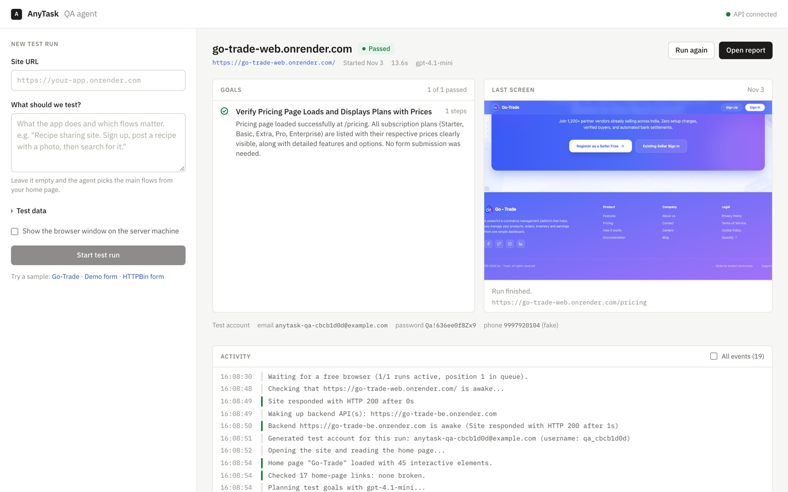
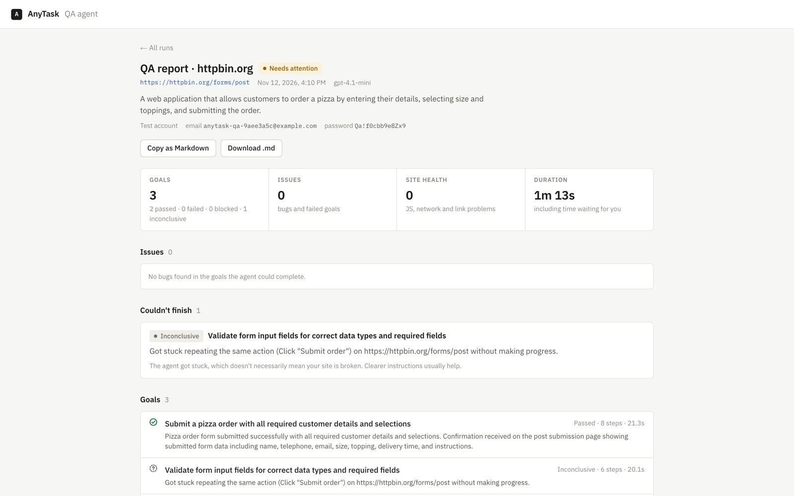

Problem
My first version asked an LLM to write the whole test plan up front. On real sites it guessed CSS selectors for pages it had never seen, filled the wrong forms, and timed out on free-tier servers that were still waking up.
Approach
I rebuilt it as an observe-decide-act agent. Each turn the live page becomes a numbered map of its interactive elements, the model picks one tool call, Playwright executes it, and guardrails stop loops and runaway runs.
Result
It signs up, fills forms and verifies outcomes on live sites, pauses to ask me for OTPs instead of guessing, and reports each goal as Pass, Fail, Blocked or Inconclusive, so the agent's own mistakes are never reported as bugs in the site under test.
Engineering highlights
- LLM tool calling with OpenAI (GPT-4.1)
- Numbered element map instead of guessed selectors
- Human-in-the-loop: OTPs, credentials, mid-run notes
- Approval gate before payments and deletes
- Safety rule enforced in code: no OTPs to fake numbers
- Console, network and broken-link health checks
- Cold-start detection for sleeping Render services
- SSRF protection, API-key auth, concurrency-limited queue
